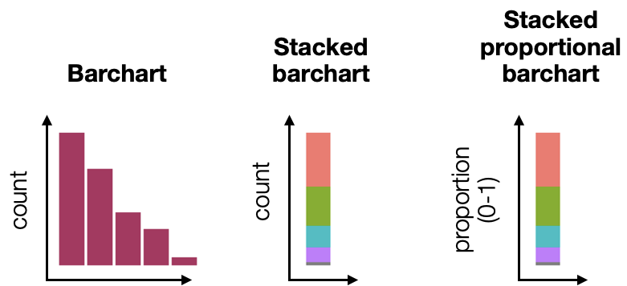

Visualizing Data - Plots#
We can visualize continuous and categorical data using different ggplot functions and we will be exploring the following types of plots
Categorical (1 variable)
Categorical (>1 variables)
Continuous (1 variable)
Continuous (1 variable) with Categorical variable(s)
Continuous (2 variables)
Continuous (2 variables) with categorical variable(s)
Data preparation#
We will use an example dataset to illustrate the basic types of plots in ggplot
We will import a dataset from the Framingham study, which was a long term study of cardiovascular disease about subjects in Framingham, USA. In this dataset
~4000 subjects followed up and clinical data and chronic heart disease outcomes were examined longitudinally over > 10 years
The variables include
male: 0 = female, 1 = maleage: Age at the time of medical examination in years.education: 1 = Some high school, 2 = high school/GED, 3 = some college/vocational school, 4 = collegecurrentSmoker: Current cigarette smoking at the time of examinationscigsPerDay: Number of cigarettes smoked each dayBPmeds: Use of Anti-hypertensive medication at examprevalentStroke: Prevalent StrokeprevalentHyp: Prevalent Hypertensivediabetes: Diabetic according to criteria of first exam treatedtotChol: Total cholesterol (mg/dL)sysBP: Systolic Blood Pressure (mmHg)diaBP: Diastolic blood pressure (mmHg)BMI: Body Mass Index, weight (kg)/height (m)^2heartRate: Heart rate (beats/minute)glucose: Blood glucose level (mg/dL)
library(tidyverse)
data <- read_csv("https://raw.githubusercontent.com/kennethban/dataset/main/framingham.csv")
# renaming column & changing data type of columns
data <- data %>%
rename(sex = male) %>%
mutate(sex = as.factor(sex),
age = as.integer(age),
education = as.factor(education),
currentSmoker = as.factor(currentSmoker),
cigsPerDay = as.integer(cigsPerDay),
BPMeds = as.factor(BPMeds),
prevalentStroke = as.factor(prevalentStroke),
prevalentHyp = as.factor(prevalentHyp),
diabetes = as.factor(diabetes),
totChol = as.integer(totChol),
heartRate = as.integer(heartRate),
TenYearCHD = as.factor(TenYearCHD)
)
# transforming any units
data <- data %>%
mutate(glucose = round(glucose/18, digits=1)) %>% # mg/dL to mmol/L
mutate(totChol = round(totChol/39, digits=1)) # mg/dL to mmol/L
head(data)
── Attaching core tidyverse packages ───────────────────────────── tidyverse 2.0.0 ──
✔ dplyr 1.1.1 ✔ readr 2.1.4
✔ forcats 1.0.0 ✔ stringr 1.5.0
✔ ggplot2 3.4.2 ✔ tibble 3.2.1
✔ lubridate 1.9.2 ✔ tidyr 1.3.0
✔ purrr 1.0.1
── Conflicts ─────────────────────────────────────────────── tidyverse_conflicts() ──
✖ dplyr::filter() masks stats::filter()
✖ dplyr::lag() masks stats::lag()
ℹ Use the conflicted package (<http://conflicted.r-lib.org/>) to force all conflicts to become errors
Rows: 4240 Columns: 16
── Column specification ─────────────────────────────────────────────────────────────
Delimiter: ","
dbl (16): male, age, education, currentSmoker, cigsPerDay, BPMeds, prevalent...
ℹ Use `spec()` to retrieve the full column specification for this data.
ℹ Specify the column types or set `show_col_types = FALSE` to quiet this message.
| sex | age | education | currentSmoker | cigsPerDay | BPMeds | prevalentStroke | prevalentHyp | diabetes | totChol | sysBP | diaBP | BMI | heartRate | glucose | TenYearCHD |
|---|---|---|---|---|---|---|---|---|---|---|---|---|---|---|---|
| <fct> | <int> | <fct> | <fct> | <int> | <fct> | <fct> | <fct> | <fct> | <dbl> | <dbl> | <dbl> | <dbl> | <int> | <dbl> | <fct> |
| 1 | 39 | 4 | 0 | 0 | 0 | 0 | 0 | 0 | 5.0 | 106.0 | 70 | 26.97 | 80 | 4.3 | 0 |
| 0 | 46 | 2 | 0 | 0 | 0 | 0 | 0 | 0 | 6.4 | 121.0 | 81 | 28.73 | 95 | 4.2 | 0 |
| 1 | 48 | 1 | 1 | 20 | 0 | 0 | 0 | 0 | 6.3 | 127.5 | 80 | 25.34 | 75 | 3.9 | 0 |
| 0 | 61 | 3 | 1 | 30 | 0 | 0 | 1 | 0 | 5.8 | 150.0 | 95 | 28.58 | 65 | 5.7 | 1 |
| 0 | 46 | 3 | 1 | 23 | 0 | 0 | 0 | 0 | 7.3 | 130.0 | 84 | 23.10 | 85 | 4.7 | 0 |
| 0 | 43 | 2 | 0 | 0 | 0 | 0 | 1 | 0 | 5.8 | 180.0 | 110 | 30.30 | 77 | 5.5 | 0 |
Data Visualization (Pt 1)#
Categorical (1 variable)
Categorical (>1 variables)
Continuous (1 variable)
Continuous (1 variable) with Categorical variable(s)
Continuous (2 variables)
Continuous (2 variables) with categorical variable(s)
1. Categorical data (1 variable)#
We can plot categorical data for 1 variable in the following ways to compare the frequency or proportion of the different categories

1.1. Barchart#
A barchart allows us to compare the frequency counts of the different categories. We use the geom_bar function and specify the following
aesinggplotx= categorical variable to plot
geom_barfill= color of plot
# Basic barchart
data %>%
ggplot(aes(x=education)) +
geom_bar(fill="salmon")
1.2. Stacked barchart (1 variable)#
A stacked barchart collapses all the categories to a single bar and the categories are mapped to different colors. The height of the bar is the total frequency count of all the categories. This is not commonly used as it is difficult to visually compare the proportions of different categories
To plot a stacked barchart, we specify the following
aesinggplotx = "all"so collapse all categories to single barfill= categorical variable to color each category
geom_barposition = "stack"to stack the barswidth: optional width of bar
# Stacked barchart for 1 categorical variable
data %>%
ggplot(aes(x="all", fill=education)) + # x="all", fill=categorical variable
geom_bar(position="stack", width=0.2) # position="stack"
1.3. Stacked proportional barchart (1 variable)#
A stacked proportional barchart collapses all the categories to a single bar and the categories are mapped to different colors. The height of the bar is normalized to 1 (100%). This chart is useful for comparing the relative proportions of categories
To plot a stacked proportional barchart, we specify the following
aesinggplotx = "all"so collapse all categories to single barfill= categorical variable to color each category
geom_barposition = "fill"to normalize the height to 1 (or 100%)width: optional width of bar
# Stacked proportional barchart for 1 categorical variable
data %>%
ggplot(aes(x="all", fill=education)) + # x="all", fill=categorical variable
geom_bar(position="fill", width=0.2) # position="fill" for proportional stack
2. Categorical data (2 variables)#
For 2 categorical variables, we can visualize them in the following ways to compare the count/proportion of the first category broken down by the second category
2.1. Stacked barchart#
To plot a stacked barchart for 2 categories, we specify the following
aesinggplotx= first categorical variable on x-axisfill= second categorical variable to breakdown each bar by color
geom_barposition = "stack"to stack the barswidth: optional width of bar
# stacked barplot of education and prevalentHyp categorical variables
data %>%
ggplot(aes(x=education, fill=prevalentHyp)) +
geom_bar()
2.2. Grouped barchart#
Instead of stacking 2 categories, we can plot them side by side by specifying the following
aesinggplotx= first categorical variable on x-axisfill= second categorical variable to breakdown each bar by color
geom_barposition = "dodge"to plot the bars side-by-sidewidth: optional width of bar`
# grouped barplot of education and prevalentHyp categorical variables
data %>%
ggplot(aes(x=education, fill=prevalentHyp)) +
geom_bar(position="dodge")
2.3. Stacked proportional barchart#
We can choose to plot the proportions of the variables for easier visual comparison. To plot a stacked proportional barchart for 2 categories, we specify the following
aesinggplotx= first categorical variable on x-axisfill= second categorical variable to breakdown each bar by color
geom_barposition = "fill"to normalize the height to 1 (or 100%)width: optional width of bar
# stacked proportional barplot of education and prevalentHyp categorical variables
data %>%
ggplot(aes(x=education, fill=prevalentHyp)) +
geom_bar(position="fill")
Categorical data (2 variables) using facet layer#
Instead of plotting both categorical variables in one plot, we can split the plot of the first category by the second category using the facet layer. Here, we use the facet_grid layer
We specify categorical variables for splitting a plot into subplots using the syntax
row category ~ column categoryto indicate the layout of plots by row and columnIf we only have 1 category to split a plot in the
facet_gridlayer, we can specify.as a placeholder
As an example, we will plot the education categorical variable as a barchart and split the plot according to the prevalentHyp category
aesinggplotx= first categorical variable
geom_barfill: optional color (default = black)
facet_gridrow ~ columnof each category to split
# barplot of education faceted by prevalentHyp (column layout)
data %>%
ggplot(aes(x=education)) +
geom_bar(fill="salmon") +
facet_grid(. ~ prevalentHyp)
# barplot of education faceted by prevalentHyp (row layout)
data %>%
ggplot(aes(x=education)) +
geom_bar(fill="salmon") +
facet_grid(prevalentHyp ~ .)
Adding labels to facet plots
The labels in the facet plots do not include the variable names by default so it can get confusing
We can specify the labeller option in facet_grid to add the categorical labels in the plots
labeller = labeller(.rows = label_both,
.cols = label_both)
# Adding labels using the category names by the labeller option
data %>%
ggplot(aes(x=education)) +
geom_bar(fill="salmon") +
facet_grid(. ~ prevalentHyp,
labeller = labeller(.rows = label_both,
.cols = label_both)) # labelling
If we want to override the labels taken from the categorical variables, we can explicitly substitute the labels. To do this, we specify the labeller option in facet_grid and indicate the new labels for each category in the following manner
labeller = labeller(category1 = c("old_label1" = "new_label1",
"old_label2" = "new_label2",
...),
category2 = c("old_label1" = "new_label1",
"old_label2" = "new_label2",
...),
...
)
For example, for prevalentHyp we want to label 0 as Normal BP and 1 as Hypertensive
# Using explicit labels for prevalentHyp
data %>%
ggplot(aes(x=education)) +
geom_bar(fill="salmon") +
facet_grid(. ~ prevalentHyp,
labeller = labeller(prevalentHyp=c("0"="Normal BP",
"1"="Hypertensive")))
2. Categorical data (>2 variables)#
We can combine the different options (fill and facet) to compare 3 categorical variables.
Let take an example where we interested in looking at the number/proportion of people with hypertension by their smoking status and gender
We start with a barplot of
prevalentHypaesinggplotx = prevalentHypfill = prevalentHypto color the prevalentHyp categories
We split the plot by
currentSmokerandsexfacet_gridrow ~ column categories:currentSmoker ~ sex
# barplot of prevalentHyp split by currentSmoker and sex
data %>%
ggplot(aes(x=prevalentHyp, fill=prevalentHyp)) +
geom_bar() +
facet_grid(currentSmoker ~ sex, # row ~ column layout
labeller = labeller(.rows = label_both,
.cols = label_both))
We can also stack the prevalentHyp categories into a single bar by setting x = "all" under the aes mapping in ggplot
data %>%
ggplot(aes(x="all", fill=prevalentHyp)) + # stack prevalentHyp
geom_bar() +
facet_grid(currentSmoker ~ sex,
labeller = labeller(.rows = label_both,
.cols = label_both))
As the counts are hard to compare on stacked barcharts, we change it to show proportions by setting position="fill" in geom_bar
data %>%
ggplot(aes(x="all", fill=prevalentHyp)) +
geom_bar(position="fill") + # change to proportion
facet_grid(currentSmoker ~ sex,
labeller = labeller(.rows = label_both,
.cols = label_both))
As it is difficult to compare the proportions between the top and bottom rows, we can layout the plots horizontally by columns by extending the row ~ column syntax using the + operator to combine 2 categorical variables (e.g. A and B) in the row or column positions
. ~ A + B: plot combinations of 2 categories (e.g.AandB) column-wiseA + B ~ .: plot combinations of 2 categories (e.g.AandB) row-wise
# plot facets column-wise for combinations of sex and currentSmoker
data %>%
ggplot(aes(x="all", fill=prevalentHyp)) +
geom_bar(position="fill") +
facet_grid(. ~ sex + currentSmoker,
labeller = labeller(.rows = label_both,
.cols = label_both))
Data Visualization (Pt 2)#
Categorical (1 variable)
Categorical (>1 variables)
Continuous (1 variable)
Continuous (1 variable) with Categorical variable(s)
Continuous (2 variables)
Continuous (2 variables) with categorical variable(s)
3. Continuous data (1 variable)#
Continuous/quantitative data for 1 variable can be visualized in the follow ways
Histogram, density, box and violin plots show the distribution of values
QQ plot is a specialized plot to help assess if the values are normally distributed
3.1. Histogram#
A histogram plots the frequency distribution of values
Values are binned according to ranges in the x-axis
The frequency of values in each bin is shown in the y-axis
To plot a histogram, we use the geom_histogram function and specify the following
aesinggplotx= continuous variable
geom_histogrambinwidth: option to indicate range of binbins: option to indicate number of binsfill: optional color
# default bins = 30
data %>%
ggplot(aes(x=BMI)) +
geom_histogram(fill="salmon")
`stat_bin()` using `bins = 30`. Pick better value with `binwidth`.
Warning message:
“Removed 19 rows containing non-finite values (`stat_bin()`).”
# changing the binwidth
data %>%
ggplot(aes(x=BMI)) +
geom_histogram(binwidth=0.5, fill="salmon")
Warning message:
“Removed 19 rows containing non-finite values (`stat_bin()`).”
3.2. Density plot#
A density plot smooths the distribution over continuous values by and is a useful alternative to a histogram. The total density (area under the curve) is normalized to 1.
To plot the density of the distribution, we use the geom_density function and specify the following
aesinggplotx= continuous variable
geom_densityfill: optional color
data %>%
ggplot(aes(x=BMI)) +
geom_density(fill="salmon")
Warning message:
“Removed 19 rows containing non-finite values (`stat_density()`).”
3.3. Boxplot#
A boxplot visualizes the distibution as a box with whiskers and shows several summary statistics
percentiles: 25th, 50th (median), 75thupper hinge: 75th percentile + 1.5 x (75th - 25th percentile)lower hinge: 25th percentile - 1.5 x (75th - 25th percentile)outliers: values outside the upper/lower hinge
To plot a boxplot, we use the geom_boxplot function
aesinggplotx = all: include all categories for the continuous variabley= continuous variable
geom_boxplotfill: optional colorwidth: optional width of box
# boxplot of BMI
data %>%
ggplot(aes(x="all",y=BMI)) +
geom_boxplot(width=0.25)
Warning message:
“Removed 19 rows containing non-finite values (`stat_boxplot()`).”
3.4. Violin plot#
A violin plot visualizes the distribution of values similar to a density plot but rotated vertically like a boxplot
To plot a violin plot, we use the geom_violin function and specify the following
aesinggplotx = all: include all categories for the continuous variabley= continuous variable
geom_violinfill: optional colorwidth: optional width of violin
# violin plot of BMI
data %>%
ggplot(aes(x="all", y=BMI)) +
geom_violin(width=0.25)
Warning message:
“Removed 19 rows containing non-finite values (`stat_ydensity()`).”
3.5. Quantile-quantile (QQ) plot#
A QQ plot is used to assess if the distribution of values follows a normal (Gaussian) distribution
From https://mgimond.github.io/ES218/Week06a.html
To demonstrate the QQ plot, we will first generate some samples from a normal distribution
data_norm <- tibble(n=rnorm(1000)) # generate 1000 samples from normal distribution
head(data_norm)
| n |
|---|
| <dbl> |
| 0.4012457 |
| 0.7259932 |
| -0.6223046 |
| -0.1461610 |
| 1.1621643 |
| -0.1080877 |
We can see that the distribution of values appears to be normally distributed from the histogram plot
# histogram plot of n
data_norm %>%
ggplot(aes(x=n)) +
geom_histogram(binwidth=.25)
We can assess if the distribution is normally distibuted using the QQ plot. It plots the quantile-quantile correlation between the theoretical normal distribution (x-axis) and the observed values (y-axis)
To plot the QQ plot, we use the geom_qq and geom_qq_line functions and specify the following
aesinggplotsample= continuous variable
geom_qqplots the quantile-quantile correlationcolor: optional color of data points
geom_qq_lineplots the line that data should fall on if normally distributedcolor: optional color of line
# qq qplot of n
data_norm %>%
ggplot(aes(sample=n)) +
geom_qq(color="red") +
geom_qq_line(color="blue")
We can see that most of the points fall on the line, consistent with the conclusion that the data is normally distributed
Let us examine the distribution of BMI in our dataset
# histogram plot of BMI
data %>%
ggplot(aes(x=BMI)) +
geom_histogram(binwidth=1)
Warning message:
“Removed 19 rows containing non-finite values (`stat_bin()`).”
# qqplot of BMI
data %>%
ggplot(aes(sample=BMI)) +
geom_qq(color="red") +
geom_qq_line(color="blue")
Warning message:
“Removed 19 rows containing non-finite values (`stat_qq()`).”
Warning message:
“Removed 19 rows containing non-finite values (`stat_qq_line()`).”
It appear the values at both lower and upper tails deviate from the theoretical line, suggesting that the BMI values are not normally distributed at the tails
4. Continuous data (1 variable) with categorical variable(s)#
4.1. Histogram#
We can visualize distributions of continuous data grouped by categorical variable(s) using
fillmapped to a category to color subsets of the distributionfacetlayer to split the distribution plots
As an example, we start with a histogram of age from our dataset
data %>%
ggplot(aes(x=age)) +
geom_histogram(binwidth=1)
We can specify fill in the mapping to show the distributions of the continuous values broken down by categories
aesinggplotx= continuous variablefill= categorical variable
data %>%
ggplot(aes(x=age, fill=prevalentHyp)) +
geom_histogram(binwidth=1)
We can also facet the plot to create subplots of the distribution by category
aesinggplotx= continuous variablefill= categorical variable
facet_gridrow ~ column: categorical variable (row or column layout)
# facet histogram plot by prevalentHyp (column layout)
data %>%
ggplot(aes(x=age,fill=prevalentHyp)) +
geom_histogram(binwidth=1) +
facet_grid(.~prevalentHyp) # column
# facet histogram plot by prevalentHyp (row) and currentSmoker (column)
data %>%
ggplot(aes(x=age,fill=prevalentHyp)) +
geom_histogram(binwidth=1) +
facet_grid(prevalentHyp ~ currentSmoker) # row ~ column

4.2. Boxplot#
We can visualize boxplots grouped by categorical variable(s) using
xmapped to the categorical variablefacetlayer to split by the categorical variable(s)
We will illustrate these starting with a boxplot of sysBP from the dataset
# boxplot of age with all categories specified
data %>%
ggplot(aes(x="all",y=sysBP)) + # x mapped to all categories
geom_boxplot(width=0.25)
To show the different boxplots for each category, we set the x mapping to the categorical variable instead of "all"
aesinggplotx= categorical variabley= continuous variable for boxplot
# boxplot of sysBP grouped by sex
data %>%
ggplot(aes(x=sex,y=sysBP)) +
geom_boxplot(width=0.25)
For additional categories, we can also facet the boxplot
aesinggplotx= categorical variabley= continuous variable for boxplot
facet_gridrow ~ column: additional categorical variable(s) (row or column layout)
# boxplot of sysBP grouped by sex and faceted by diabetes
data %>%
ggplot(aes(x=sex,y=sysBP)) +
geom_boxplot() +
facet_grid(.~diabetes) # facet by diabetes in column layout
Data Visualization (Pt 3)#
Categorical (1 variable)
Categorical (>1 variables)
Continuous (1 variable)
Continuous (1 variable) with categorical variable(s)
Continuous (2 variables)
Continuous (2 variables) with categorical variable(s)
5. Continuous (2 variables)#
The relationship between 2 continuous variables can be visualized with a scatterplot
To plot a scatterplot, we use the geom_point function and specify the following
aesinggplotx= continuous variable 1y= continuous variable 2
geom_pointcolor: optional colorsize: optional sizeshape: optional shape
# scatterplot of BMI and sysBP
data %>%
ggplot(aes(x=BMI, y=sysBP)) +
geom_point()
Warning message:
“Removed 19 rows containing missing values (`geom_point()`).”
We can add a geom_smooth function to draw a linear regression line to highlight any possible linear relationship between the 2 continuous variables
aesinggplotx= continuous variable 1y= continuous variable 2
geom_pointto plot the x,y pointsgeom_smoothto plot the regression linemethod: set tolmfor linear line
# scatterplot of BMI and sysBP with linear regression line
data %>%
ggplot(aes(x=BMI, y=sysBP)) +
geom_point() +
geom_smooth(method="lm")
`geom_smooth()` using formula = 'y ~ x'
Warning message:
“Removed 19 rows containing non-finite values (`stat_smooth()`).”
Warning message:
“Removed 19 rows containing missing values (`geom_point()`).”
6. Continuous data (2 variables) with categorical variable(s)#
We can visualize scatterplots grouped by categorical variable(s) using
color,sizeorshapemapped to a categoryfacetlayer to split the distribution plots
6.1. Mapping categories to points#
We can use color, size, shape in aes to map a categorical variable to the scatterplot
aesinggplotcolor= categorical variablesize= categorical variableshape= categorical variable
geom_pointto plot the x,y points
# scatterplot grouped by sex using color
data %>%
ggplot(aes(x=BMI, y=sysBP, color=sex)) +
geom_point()
Warning message:
“Removed 19 rows containing missing values (`geom_point()`).”
# scatterplot grouped by sex using size
data %>%
ggplot(aes(x=BMI, y=sysBP, size=sex)) +
geom_point()
Warning message:
“Using size for a discrete variable is not advised.”
Warning message:
“Removed 19 rows containing missing values (`geom_point()`).”
# scatterplot grouped by sex using shape
data %>%
ggplot(aes(x=BMI, y=sysBP, shape=sex)) +
geom_point()
Warning message:
“Removed 19 rows containing missing values (`geom_point()`).”
As you can see, the color mapping appears to be more effective in highlight the different categories in the scatterplot
6.2. Faceting#
We can also facet the scatterplot to create subplots by category
aesinggplotx= continuous variable 1y= continuous variable 2
facet_gridrow ~ column: categorical variable(s) (row or column layout)
# scatterplot of BMI and sysBP faceted by prevalentHyp
data %>%
ggplot(aes(x=BMI, y=sysBP)) +
geom_point() +
facet_grid(.~prevalentHyp) # prevalentHyp column layout
Warning message:
“Removed 19 rows containing missing values (`geom_point()`).”
# scatterplot of BMI and sysBP faceted by sex and prevalentHyp
data %>%
ggplot(aes(x=BMI, y=sysBP)) +
geom_point() +
facet_grid(sex~prevalentHyp) # sex (row) and prevalentHyp (column)
Warning message:
“Removed 19 rows containing missing values (`geom_point()`).”
Exercise - Visualizing Data#
We will use the Framingham heart study dataset
library(tidyverse)
# load data
data <- read_csv("https://raw.githubusercontent.com/kennethban/dataset/main/framingham.csv")
# renaming column & changing data type of columns
data <- data %>%
rename(sex = male) %>%
mutate(sex = as.factor(sex),
age = as.integer(age),
education = as.factor(education),
currentSmoker = as.factor(currentSmoker),
cigsPerDay = as.integer(cigsPerDay),
BPMeds = as.factor(BPMeds),
prevalentStroke = as.factor(prevalentStroke),
prevalentHyp = as.factor(prevalentHyp),
diabetes = as.factor(diabetes),
totChol = as.integer(totChol),
heartRate = as.integer(heartRate),
TenYearCHD = as.factor(TenYearCHD)
)
# transforming any units
data <- data %>%
mutate(glucose = round(glucose/18, digits=1)) %>% # mg/dL to mmol/L
mutate(totChol = round(totChol/39, digits=1)) # mg/dL to mmol/L
head(data)
Rows: 4240 Columns: 16
── Column specification ─────────────────────────────────────────────────────────────
Delimiter: ","
dbl (16): male, age, education, currentSmoker, cigsPerDay, BPMeds, prevalent...
ℹ Use `spec()` to retrieve the full column specification for this data.
ℹ Specify the column types or set `show_col_types = FALSE` to quiet this message.
| sex | age | education | currentSmoker | cigsPerDay | BPMeds | prevalentStroke | prevalentHyp | diabetes | totChol | sysBP | diaBP | BMI | heartRate | glucose | TenYearCHD |
|---|---|---|---|---|---|---|---|---|---|---|---|---|---|---|---|
| <fct> | <int> | <fct> | <fct> | <int> | <fct> | <fct> | <fct> | <fct> | <dbl> | <dbl> | <dbl> | <dbl> | <int> | <dbl> | <fct> |
| 1 | 39 | 4 | 0 | 0 | 0 | 0 | 0 | 0 | 5.0 | 106.0 | 70 | 26.97 | 80 | 4.3 | 0 |
| 0 | 46 | 2 | 0 | 0 | 0 | 0 | 0 | 0 | 6.4 | 121.0 | 81 | 28.73 | 95 | 4.2 | 0 |
| 1 | 48 | 1 | 1 | 20 | 0 | 0 | 0 | 0 | 6.3 | 127.5 | 80 | 25.34 | 75 | 3.9 | 0 |
| 0 | 61 | 3 | 1 | 30 | 0 | 0 | 1 | 0 | 5.8 | 150.0 | 95 | 28.58 | 65 | 5.7 | 1 |
| 0 | 46 | 3 | 1 | 23 | 0 | 0 | 0 | 0 | 7.3 | 130.0 | 84 | 23.10 | 85 | 4.7 | 0 |
| 0 | 43 | 2 | 0 | 0 | 0 | 0 | 1 | 0 | 5.8 | 180.0 | 110 | 30.30 | 77 | 5.5 | 0 |
Part 1#
Plot a graph to compare the different proportions of patients with TenYearCHD among males and females
# start here
Show code cell content
# solution
data %>%
ggplot(aes(x=TenYearCHD, fill=sex)) +
geom_bar(position="fill")
Part 2#
Plot a graph to show the distribution of ages in patients with and without chronic heart disease using TenYearCHD
# start here
Show code cell content
# solution
data %>%
ggplot(aes(x=age, fill=TenYearCHD)) +
geom_histogram(binwidth=1)
Part 3#
Evaluate if the distribution of the systolic BP is likely to be normal
# start here
Show code cell content
# solution
data %>%
ggplot(aes(sample=sysBP)) +
geom_qq(color="red") +
geom_qq_line()
Part 4#
Plot a boxplot to compare the distribution of total cholesterol between patients with and without chronic heart disease using TenYearCHD
# start here
Show code cell content
# solution
data %>%
ggplot(aes(x=TenYearCHD, y=totChol)) +
geom_boxplot()
Warning message:
“Removed 50 rows containing non-finite values (`stat_boxplot()`).”
Part 5#
Plot a graph to examine the relationship between BMI and systolic BP, then compare this relationship among male and female patients using side-by-side plots by adding a linear regression line
# start here for first section
Show code cell content
# solution
data %>%
ggplot(aes(x=BMI, y=sysBP)) +
geom_point()
Warning message:
“Removed 19 rows containing missing values (`geom_point()`).”
# start here for second section
Show code cell content
# solution
data %>%
ggplot(aes(x=BMI, y=sysBP)) +
geom_point() +
geom_smooth(method="lm") +
facet_grid(.~sex)
`geom_smooth()` using formula = 'y ~ x'
Warning message:
“Removed 19 rows containing non-finite values (`stat_smooth()`).”
Warning message:
“Removed 19 rows containing missing values (`geom_point()`).”